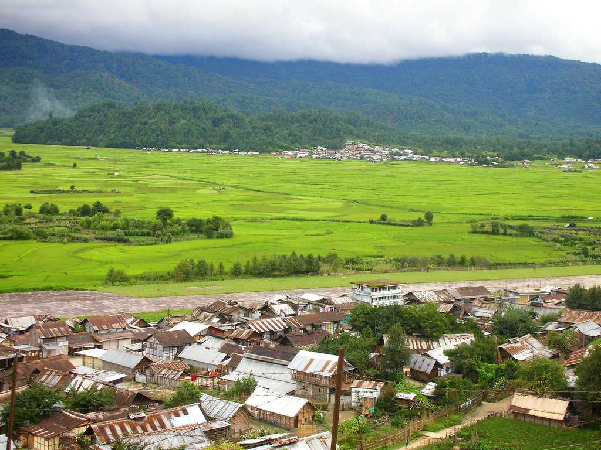

14
Aug
Ziro - Arunachal Pradesh
The cradle to a unique tribal group and a balmy climate, Ziro is the peace seeker's paradise.
The cradle to a unique tribal group and a balmy climate, Ziro is the peace seeker's paradise. Ziro is a quaint old town in Arunachal Pradesh, home to the Apa Tani tribe and famous for its pine hills and rice fields. The climate in Ziro is mild through the year, making it comfortable to travel all year round. Ziro Festival is a must visit event of the